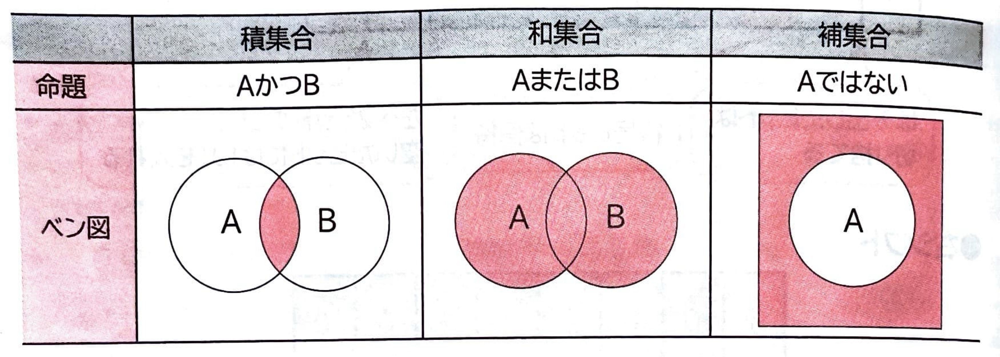
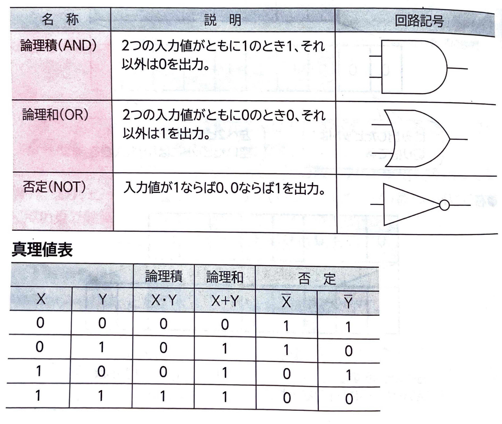
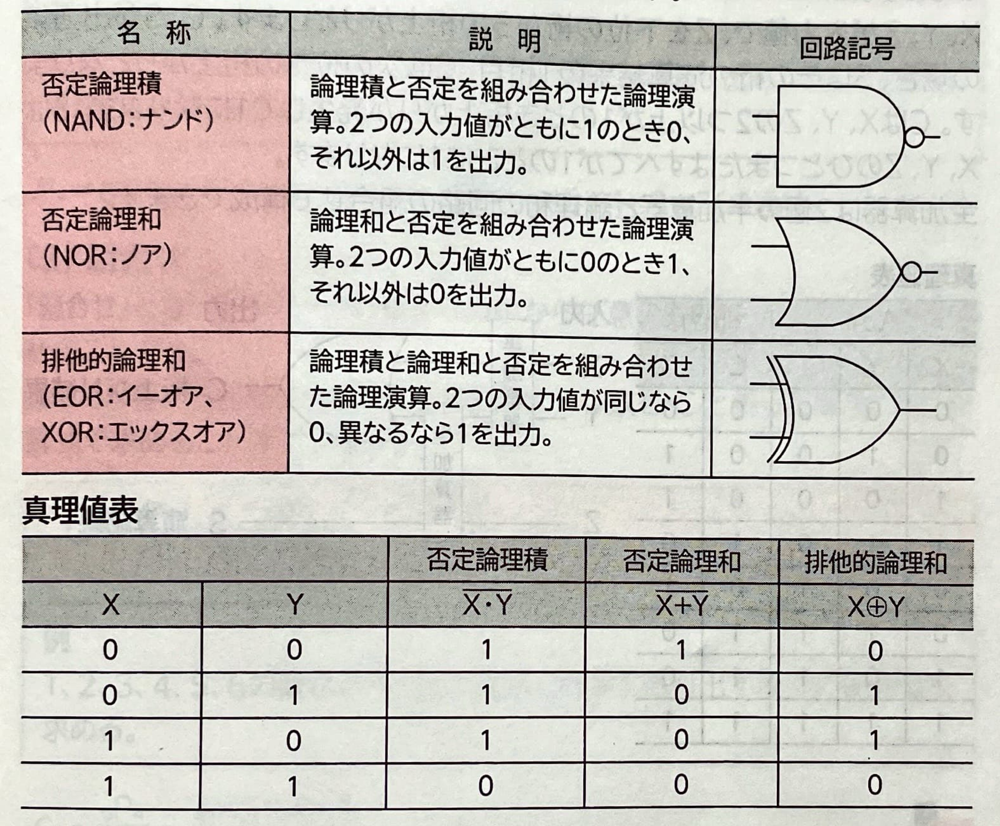
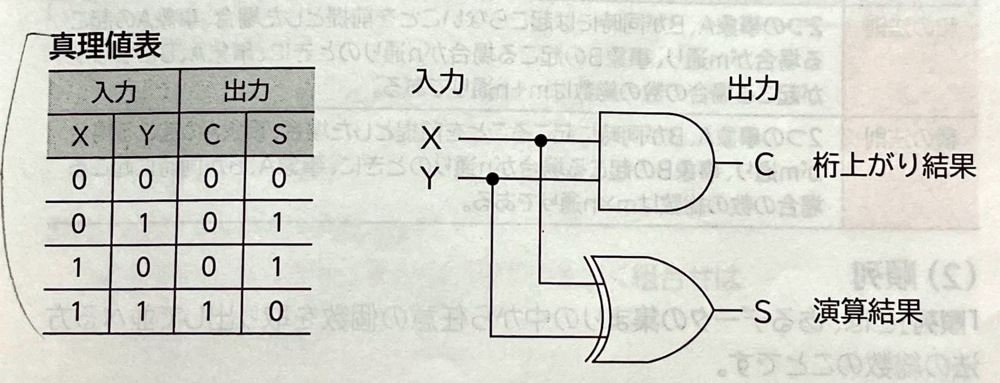
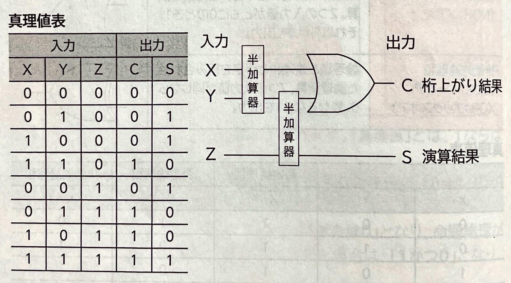

表示
｢集合｣
とは、ある明確な条件に基づきグループ化されたデータの集まりのことです。集合は｢AまたはB｣
などの文章で表現できます。このような文章や条件式(論理式)を｢命題｣
といいます。｢ベン図｣
で表現できます。
このベン図を解釈するには、｢真理値｣
を求めます。｢真理値｣
とは、1ならば｢真｣
を、0ならば｢偽｣
を意味します。｢1または0｣
となり、命題倫理が成立します。しかし、命題｢AかつB｣に当てはめた場合は、｢1かつ0｣
となり、命題論理は成立しません。｢論理演算｣
とは、複数の条件(論理)の組合わせを条件式で表したときの演算方法のことです。コンピュータ内部でも論理演算は行われ、論理演算を担当する電子回路を｢論理回路｣
といいます。｢回路記号｣
を使って図で表現できます。回路記号は｢MIL(ミル)記号｣
ともいいます。
●組合わせの論理演算
(2)半加算器と全加算器｢演算回路｣
といい、2進数の加算を行う演算回路を｢加算器｣
といいます。｢半加算器｣
と｢全加算器｣
があります。｢半加算器｣
とは、2進数の加算で下位の桁から桁上がりを考慮しない加算器のことです。
●全加算器｢全加算器｣
とは、2進数の加算で下位の桁からの桁上がりを含める加算器のことです。